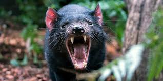
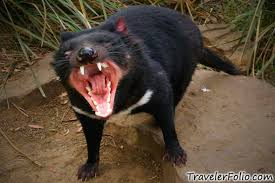

Quick Facts

- Common name: Tasmanian Devil
- Scientific name: Sarcophilus harrisii
- Type: Mammal
- Diet: Carnivore
- Avg. Lifespan in Wild: Up to 5 years
- Size: 20-31 in.
- Weight: 9 to 26 lbs
History/Description
 The Tasmanian devil got his name from European settlers. By the alarming, haunting screeches, the early European settlers gave it it's name of the Tasmanian devil. Tasmanian devils can be found almost anywhere in Tasmania from the coast even to the mountains.
Devil threats and Conservation
Since the Tasmanian Devil would kill and eat livestock, the settlers would kill them. After many years of this, eventually the Tasmanian devil became very rare and now considered endangered. In 1914, there was a protective law passed which has helped. But many people believe that the Tasmanian devil might be extinct. Many people on the local, national, and international level are all trying their best to prevent this possible reality.